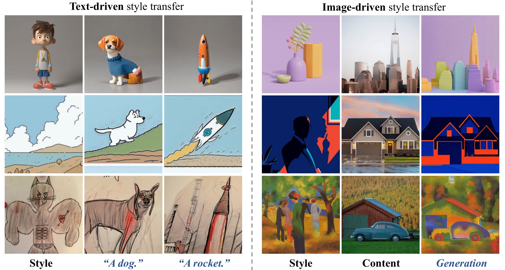
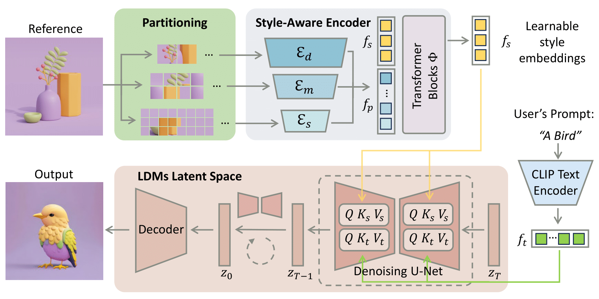

StyleShot: A SnapShot on Any Style


In this paper, we show that, a good style representation is crucial and sufficient for generalized style transfer without test-time tuning. We achieve this through constructing a style-aware encoder and a well-organized style dataset called StyleGallery. With dedicated design for style learning, this style-aware encoder is trained to extract expressive style representation with decoupling training strategy, and StyleGallery enables the generalization ability. We highlight that, our approach, named StyleShot, is simple yet effective in mimicking various desired styles, i.e., 3D, flat, abstract or even fine-grained styles, without test-time tuning. Rigorous experiments validate that, StyleShot achieves superior performance across a wide range of styles compared to existing state-of-the-art methods.

StyleShot is built on Stable Diffusion. We first We pre-decouple the multiple level style information from the reference image by partitioning it into varied-size patches and then processing them by varied-depth networks. Next, we train the Transformer Blocks from scratch, along with the learnable style embeddings, to specially capture the rich style representation from patch embeddings. Finally, to preserve the Stable Diffusion model's robust response to text, we employ a parallel cross-attention module for style embedding injection.
Results for re-contextualization of a bag and vase subject instances. By finetuning a model using our method we are able to generate different images of the a subject instance in different environments, with high preservation of subject details and realistic interaction between the scene and the subject. We display the conditioning prompts below each image.

Original artistic renditions of our subject dog in the style of famous painters. We remark that many of the generated poses were not seen in the training set, such as the Van Gogh and Warhol rendition. We also note that some renditions seem to have novel composition and faithfully imitate the style of the painter - even suggesting some sort of creativity (extrapolation given previous knowledge).

Our technique can synthesized images with specified viewpoints for a subject cat (left to right: top, bottom, side and back views). Note that the generated poses are different from the input poses, and the background changes in a realistic manner given a pose change. We also highlight the preservation of complex fur patterns on the subject cat's forehead.

We show color modifications in the first row (using prompts ``a [color] [V] car''), and crosses between a specific dog and different animals in the second row (using prompts ``a cross of a [V] dog and a [target species]''). We highlight the fact that our method preserves unique visual features that give the subject its identity or essence, while performing the required property modification.

Outfitting a dog with accessories. The identity of the subject is preserved and many different outfits or accessories can be applied to the dog given a prompt of type "a [V] dog wearing a police/chef/witch outfit''. We observe a realistic interaction between the subject dog and the outfits or accessories, as well as a large variety of possible options.

This project aims to provide users with an effective tool for synthesizing personal subjects (animals, objects) in different contexts. While general text-to-image models might be biased towards specific attributes when synthesizing images from text, our approach enables the user to get a better reconstruction of their desirable subjects. On contrary, malicious parties might try to use such images to mislead viewers. This is a common issue, existing in other generative models approaches or content manipulation techniques. Future research in generative modeling, and specifically of personalized generative priors, must continue investigating and revalidating these concerns.
@article{ruiz2022dreambooth,
title={DreamBooth: Fine Tuning Text-to-image Diffusion Models for Subject-Driven Generation},
author={Ruiz, Nataniel and Li, Yuanzhen and Jampani, Varun and Pritch, Yael and Rubinstein, Michael and Aberman, Kfir},
booktitle={arXiv preprint arxiv:2208.12242},
year={2022}
}
Acknowledgements: We thank Rinon Gal, Adi Zicher, Ron Mokady, Bill Freeman, Dilip Krishnan, Huiwen Chang and Daniel Cohen-Or for their valuable inputs that helped improve this work, and to Mohammad Norouzi, Chitwan Saharia and William Chan for providing us with their support and the pretrained models of Imagen. Finally, a special thank you to David Salesin for his feedback, advice and for his support for the project.